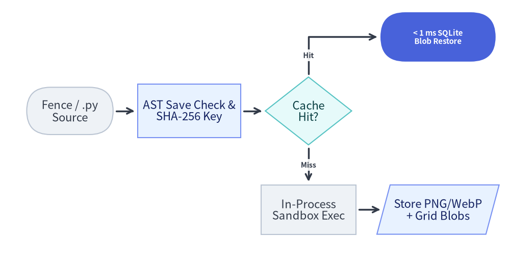
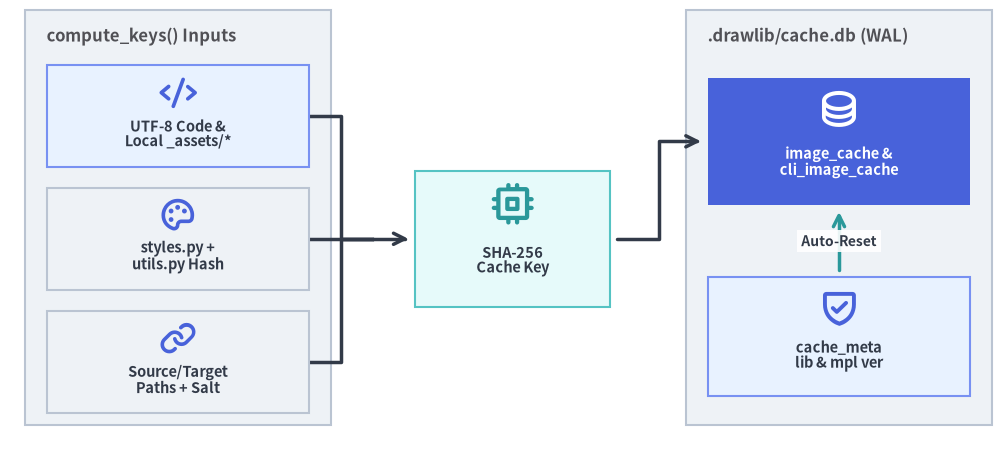

SQLite Cache Engine & AST Analysis
Re-executing hundreds of Matplotlib scripts on every edit would turn documentation builds into multi-minute bottlenecks. Drawlib eliminates redundant rendering through a two-stage pre-execution pipeline: static Python ast inspection (_builder/_image_ast.py) for conflict detection and import safety, paired with a SHA-256 SQLite blob cache (_builder/_common/cache.py in .drawlib/cache.db) that restores unchanged PNG, WebP, and coordinate-grid images in < 1 ms.

Source Code
from drawlib.canvas import save, setup
from drawlib.diagrams.flow import Data, Decision, End, FlowDiagram, Process, Start
from drawlib.styles import Styles
setup(width=124, height=64)
flow = FlowDiagram(
node_style=Styles.Neutral.patch(text_size=10.8),
edge_style=Styles.DarkBold,
edge_text_style=Styles.DarkBold.patch(text_size=10.2),
)
source = flow.add(
Start("Fence / .py\nSource", width=21.0, height=11.5, style=Styles.Neutral),
xy=(13.5, 34.0),
)
precheck = flow.add(
Process("AST Save Check &\nSHA-256 Key", width=25.0, height=13.0, style=Styles.PrimaryNeutral),
xy=(42.5, 34.0),
)
decision = flow.add(
Decision("Cache\nHit?", width=21.0, height=16.5, style=Styles.SecondaryNeutral),
xy=(71.5, 34.0),
)
# Hit Branch (Top-Right)
hit = flow.add(
End(
"< 1 ms SQLite\nBlob Restore",
width=28.0,
height=12.0,
style=Styles.PrimaryFlat,
text_style=Styles.WhiteBold.patch(text_size=10.8),
),
xy=(103.0, 52.0),
)
# Miss Branch (Bottom-Right)
sandbox = flow.add(
Process("In-Process\nSandbox Exec", width=23.0, height=12.0, style=Styles.Neutral),
xy=(71.5, 10.0),
)
store = flow.add(
Data("Store PNG/WebP\n+ Grid Blobs", width=26.5, height=12.0, style=Styles.PrimaryNeutral),
xy=(103.0, 10.0),
)
source.connect(precheck, padding=0.8)
precheck.connect(decision, padding=0.8)
decision.connect(hit, label="Hit", start_side="top", end_side="left", padding=0.8)
decision.connect(sandbox, label="Miss", start_side="bottom", end_side="top", padding=0.8)
sandbox.connect(store, start_side="right", end_side="left", padding=0.8)
flow.draw(xy=(62.0, 32.0), align="center")
save()
1. Crucial Distinction: Raw Content Hashing vs. Static Python ast Analysis
Drawlib deliberately separates cryptographic cache-key generation from static syntax-tree inspection so each subsystem stays fast, deterministic, and sound:
- Raw UTF-8 Content Hashing (
BuildImageCache.compute_keys):- Drawlib does not normalize or strip Python AST nodes when computing cache keys. Instead,
hash_text(code)hashes the exact UTF-8 source text (hashlib.sha256(code.encode("utf-8")).hexdigest()), ensuring formatting or string-literal changes are captured in microseconds without AST canonicalization edge cases. compute_keys()combinescode_hash,config_hash(styles.py+utils.py),_hash_referenced_local_assets()(scanning string literals like'logo.png'or'brand.ttf'across the script directory, project root, and_assets/), canonicalizedsource_abs/target_abspaths, and an optional rendererextra_salt(such as:svg-fonts-v1for SVG font output).
- Drawlib does not normalize or strip Python AST nodes when computing cache keys. Instead,
- Static Python
astPre-Execution Analysis (_builder/_image_ast.py):- Before executing standalone
.pyscripts,check_duplicate_script_outputs()parses each file withast.parse()and runs_SaveCallVisitor(_parse_static_save_call) to statically resolve literalsave(file, format)targets viaresolve_static_save_target()and fail immediately if two scripts collide on the same output image path. _extract_single_static_save()uses_has_local_imports()to walkast.Importandast.ImportFromnodes. If a standalone script imports unhashed local helper modules from its own directory ortopdir_path(beyond trackedstyles.pyandutils.py), Drawlib conservatively skips the pre-execution static shortcut so edits to custom local modules never return stale images.
- Before executing standalone

Source Code
from drawlib.canvas import save, setup
from drawlib.diagrams.architecture import ArchitectureDiagram, Node, NodeGroup, PhosphorIcon
from drawlib.styles import Styles
setup(width=118, height=54)
d = ArchitectureDiagram(
node_style=Styles.PrimaryBold,
node_text_style=Styles.DarkBold.patch(text_size=10.5),
edge_style=Styles.DarkBold,
edge_text_style=Styles.DarkBold.patch(text_size=10.0),
node_card_style=Styles.Neutral,
)
# Left Group: Composite Key Inputs
inputs_grp = d.add(
NodeGroup(title="compute_keys() Inputs", width=36.0, height=49.0, style=Styles.Neutral),
xy=(2.0, 2.5),
)
in_code = inputs_grp.add(
Node(
"UTF-8 Code &\nLocal _assets/*",
width=31.0,
height=12.0,
icon=PhosphorIcon.CODE,
icon_size=4.5,
card_style=Styles.PrimaryNeutral,
),
xy=(18.0, 36.5),
)
in_cfg = inputs_grp.add(
Node(
"styles.py +\nutils.py Hash",
width=31.0,
height=12.0,
icon=PhosphorIcon.PALETTE,
icon_size=4.5,
card_style=Styles.Neutral,
),
xy=(18.0, 22.0),
)
in_paths = inputs_grp.add(
Node(
"Source/Target\nPaths + Salt",
width=31.0,
height=12.0,
icon=PhosphorIcon.LINK,
icon_size=4.5,
card_style=Styles.Neutral,
),
xy=(18.0, 7.5),
)
# Merge Bus Junction -> Single Clean Arrowhead into Hasher
bus = d.junction((43.0, 24.5))
d.connect(in_code, bus, arrow="-")
d.connect(in_cfg, bus, arrow="-")
d.connect(in_paths, bus, arrow="-")
hasher = d.add(
Node(
"SHA-256\nCache Key",
width=23.0,
height=16.0,
icon=PhosphorIcon.CPU,
icon_size=5.2,
style=Styles.SecondaryBold,
card_style=Styles.SecondaryNeutral,
),
xy=(59.5, 24.5),
)
d.connect(bus, hasher, arrow="->", padding=(0.0, 0.8))
# Right Group: SQLite Database & Version Metadata Guard
db_grp = d.add(
NodeGroup(title=".drawlib/cache.db (WAL)", width=36.0, height=49.0, style=Styles.Neutral),
xy=(80.0, 2.5),
)
img_tbl = db_grp.add(
Node(
"image_cache &\ncli_image_cache",
width=31.0,
height=15.0,
icon=PhosphorIcon.DATABASE,
icon_size=5.0,
style=Styles.WhiteBold,
text_style=Styles.WhiteBold.patch(text_size=10.5),
card_style=Styles.PrimaryFlat,
),
xy=(18.0, 33.5),
)
meta_tbl = db_grp.add(
Node(
"cache_meta\nlib & mpl ver",
width=31.0,
height=14.0,
icon=PhosphorIcon.SHIELD_CHECK,
icon_size=4.8,
card_style=Styles.PrimaryNeutral,
),
xy=(18.0, 10.5),
)
d.connect(hasher, img_tbl, arrow="->", padding=0.8)
d.connect(meta_tbl, img_tbl, label="Auto-Reset", style=Styles.SecondaryBold, padding=0.8)
d.draw(xy=(59.0, 27.0), align="center")
save()
2. Positioning: Cache Engine in Build & CLI Workflows
.drawlib/cache.db serves two sibling cache managers inside drawlib._builder._common.cache:
BuildImageCache(image_cachetable):- Used by
doc_builder(DrawlibBlockProcessor) andimage_builder(DrawlibExecuter) for static.png/.webpdiagrams as well as multi-frame.webpanimations (see Animation & Slide Engines). - Stores both standard production blobs (
png_blob,webp_blob) and coordinate-grid debug blobs (png_grid_blob,webp_grid_blob) side-by-side under the samecache_key.
- Used by
CliImageCache(cli_image_cachetable):- Caches rendered catalog preview sheets generated by
drawlib styles showanddrawlib colors show(keyed by category, preset name, page number, andhas_grid), making repeated style lookups instantaneous.
- Caches rendered catalog preview sheets generated by
Database path resolution (get_default_cache_db_path()) checks DRAWLIB_CACHE_DB, DRAWLIB_CACHE_DIR/cache.db, an upward directory walk for .drawlib/cache.db, and finally falls back to <cwd>/.drawlib/cache.db (automatically writing .gitignore rules via ensure_cache_dir_ignores()).
3. Details: SQLite Schema, Version Guards & LRU Eviction
3.1. Exact SQLite Schema (WAL Mode)
Connections open with PRAGMA journal_mode=WAL; and PRAGMA synchronous=NORMAL; (timeout=30.0), managing three tables:
CREATE TABLE IF NOT EXISTS cache_meta (
key TEXT PRIMARY KEY,
value TEXT NOT NULL
);
CREATE TABLE IF NOT EXISTS image_cache (
cache_key TEXT PRIMARY KEY,
code_hash TEXT NOT NULL,
config_hash TEXT NOT NULL,
png_blob BLOB,
png_size_bytes INTEGER NOT NULL DEFAULT 0,
png_grid_blob BLOB,
png_grid_size_bytes INTEGER NOT NULL DEFAULT 0,
webp_blob BLOB,
webp_size_bytes INTEGER NOT NULL DEFAULT 0,
webp_grid_blob BLOB,
webp_grid_size_bytes INTEGER NOT NULL DEFAULT 0,
total_size_bytes INTEGER NOT NULL DEFAULT 0,
created_at REAL NOT NULL,
last_accessed_at REAL NOT NULL
);
CREATE INDEX IF NOT EXISTS idx_image_cache_last_accessed
ON image_cache(last_accessed_at);
CREATE TABLE IF NOT EXISTS cli_image_cache (
cache_key TEXT PRIMARY KEY,
category TEXT NOT NULL,
preset_name TEXT NOT NULL,
page INTEGER NOT NULL,
has_grid INTEGER NOT NULL,
png_blob BLOB NOT NULL,
total_size_bytes INTEGER NOT NULL,
created_at REAL NOT NULL,
last_accessed_at REAL NOT NULL
);
CREATE INDEX IF NOT EXISTS idx_cli_image_cache_accessed
ON cli_image_cache(last_accessed_at);
3.2. Automatic Version-Upgrade Reset & 1 GiB LRU Eviction
- Environment Version Guard (
cache_meta): On initialization,BuildImageCacheandCliImageCachecompare the storedlib_version,matplotlib_version(queried lazily viaimportlib.metadatawithout importing Matplotlib), andschema_version("1"). Whenever Drawlib or Matplotlib is upgraded, the tables are automatically dropped, recreated, andVACUUM-compacted so subtle typography or rasterization changes never serve stale outputs. - 1 GiB Bounded Footprint: Each
put()updates per-format byte counters (png_size_bytes,png_grid_size_bytes,webp_size_bytes,webp_grid_size_bytes) andtotal_size_bytes, while everyget()refresheslast_accessed_at(time.time()float). WhenSUM(total_size_bytes)exceeds 1 GiB (DEFAULT_MAX_CACHE_BYTES = 1,073,741,824),_init_db_and_evict()deletes the oldest 50% of rows ordered bylast_accessed_at ASC, created_at ASCand compacts the file withVACUUM.
3.3. Cache & External Asset Management CLI
The drawlib cache sub-application (_cli/commands/cache.py) manages both .drawlib/cache.db and external release asset packages (drawlib._cached_assets/):
# Clear rendered SQLite image blobs (.drawlib/cache.db)
uv run drawlib cache clear --images
# Clear both external font/icon/map packages AND .drawlib/cache.db
uv run drawlib cache clear --all
# Inspect local download status & sizes of external font, icon, and map packages
uv run drawlib cache list
# Pre-download release asset archives and/or headless Chromium for offline/CI builds
uv run drawlib cache download --all # Or --fonts, --icons, --maps, --browser
Next, proceed to Chapter 3: Primitives & Backends.